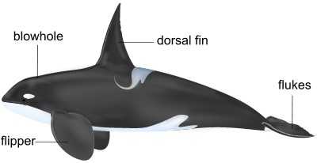
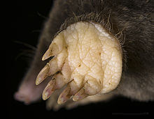

During the early stages of development, the embryos of different vertebrates are almost indistinguishable.
Fish, amphibian, bird and mammalian embryos have similar, features, indicating that they arose from a common ancestor.
Similarities include: Visceral clefts, segmental muscle blocks (myotomes) and a single circulation.
Comparative Anatomy
Comparative anatomy is the study of organs in different species with the aim of establishing whether the organism are related.
Organisms which have the same basic features are thought to have arisen from a common ancestor.
The vertebrate pentadactyl limb evolved in different ways as an adaptation to different modes of life. e.g. as a flipper in whales, as a wing in bats and as a digging hand in moles.  Diagram showing flippers in whales
 Diagram showing the digging hand in moles
Diagram showing wings in bats
Such organs are said to be homologous, i.e. they have arisen from a common ancestor but they have assumed different functions. This is an example of divergent evolution.
The wing of a butterfly and that of a bird are said to be analogous, i.e. they have originated from different ancestors but they perform the same function.